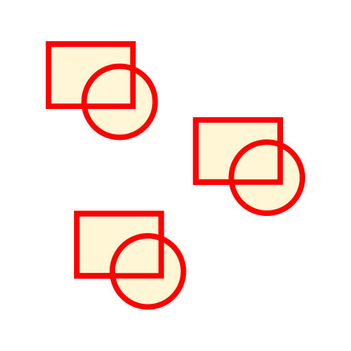
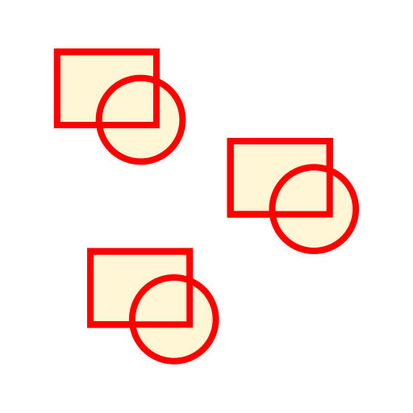
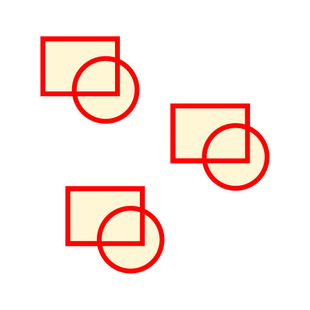

Menü: Block > Block Referenzen selektieren
Tastenkürzel: B, +
Kommandos: blockselect | selectblock | b+

Beschreibung:
Dieses Werkzeug selektiert alle Blockreferenzen des Blocks, welcher momentan in der Blockliste ausgewählt ist. Blockreferenzen, die nicht Teil des Blocks sind, der momentan bearbeitet wird, werden nicht selektiert.